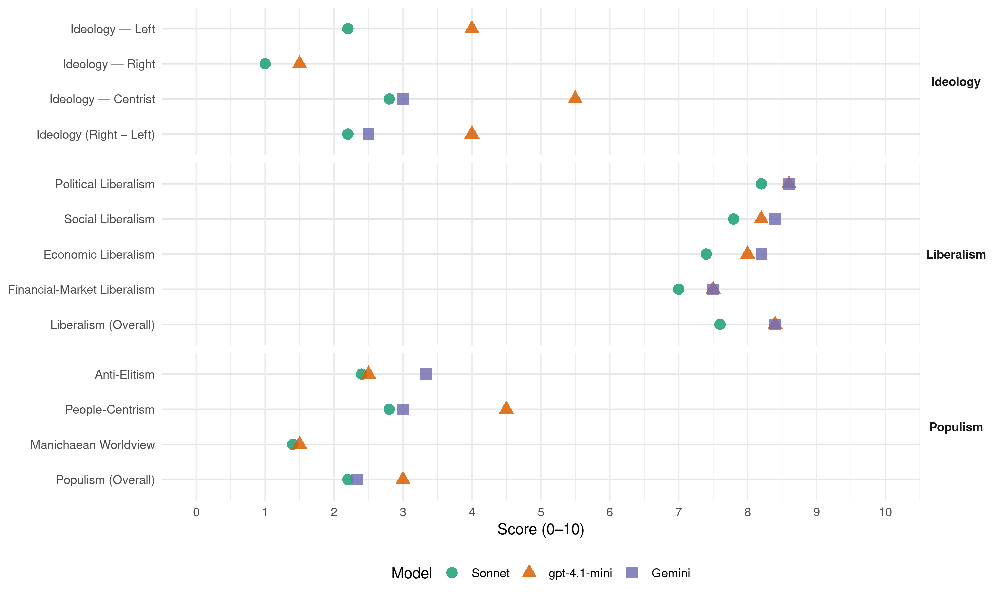

DP/PD (Luxembourg, 2013)
manifesto_id 23420_201310
Get full text: This site shows derived annotations and short verbatim quotes only. The full manifesto text is © Manifesto Project / WZB — obtain it via manifesto-project.wzb.eu using the manifesto_id above.
Headline scores
| Dimension | Sonnet | gpt-4.1-mini | Gemini |
|---|---|---|---|
| Populism (Overall) | 2.2 | 3.0 | 2.3 |
| Anti-Elitism | 2.4 | 2.5 | 3.3 |
| People-Centrism | 2.8 | 4.5 | 3.0 |
| Manichaean Worldview | 1.4 | 1.5 | – |
| Ideology (Right − Left) | 2.2 | 4.0 | 2.5 |
| Liberalism (Overall) | 7.6 | 8.4 | 8.4 |
| Political Liberalism | 8.2 | 8.6 | 8.6 |
| Social Liberalism | 7.8 | 8.2 | 8.4 |
| Economic Liberalism | 7.4 | 8.0 | 8.2 |
| Financial-Market Liberalism | 7.0 | 7.5 | 7.5 |
Evidence per dimension
Economic Liberalism
Gemini · score 9.0 · verified · chunk 1
“concurrence fiscale européenne et internationale selon des règles claires”
estimons que, dans un monde globalisé, il doit y avoir une concurrence fiscale européenne et internationale selon des règles claires. Il s’agit de reconnaître les avantages d’un
Gemini · score 8.0 · verified · chunk 2
“améliorer sensiblement les conditions cadres de l’économie”
Voter le DP signifie améliorer sensiblement les conditions cadres de l’économie, dans le but de créer
Gemini · score 8.0 · verified · chunk 3
“impliquer activement l’initiative privée”
Pour pouvoir satisfaire la demande énorme, nous voulons également impliquer activement l’initiative privée dans la création de logements sociaux
Gemini · score 8.0 · verified · chunk 4
“charges sociales modérées sur les salaires”
site économique luxembourgeois sont les charges sociales modérées sur les salaires. Le DP veut une réforme dans laquelle
Gemini · score 8.0 · verified · chunk 5
“le libre-échange, le soutien de la propriété privée”
Après l’éducation, la démocratie, le libre-échange, le soutien de la propriété privée et de l’économie de marché
gpt-4.1-mini · score 9.0 · verified · chunk 1
“Die DP stellt sich dem Wähler mit einer verantwortungsvollen Politik im Umgang mit den öffentlichen Finanzen.”
Die DP stellt sich dem Wähler mit einer verantwortungsvollen Politik im Umgang mit den öffentlichen Finanzen. Einer Politik, mit der auch die kommenden Generationen den nötigen Handlungsspielraum haben, um ihre Zukunft selber gestalten zu können. Die DP ist deshalb die Stimme derjenigen Bürger, die mit einer ehrlichen Reformpolitik unser Land auf die Zukunft vorbereiten wollen!
gpt-4.1-mini · score 8.0 · verified · chunk 2
“une économie de marché sociale et que nous nous opposons au capitalisme de casino”
Étant donné que nous représentons une économie de marché sociale et que nous nous opposons au capitalisme de casino, nous sommes aussi en faveur de règles claires pour tous les acteurs de la place financière.
gpt-4.1-mini · score 7.0 · verified · chunk 3
“soutenir l’élargissement de l’accueil des enfants et l’amélioration de la qualité”
Nous continuons donc à soutenir l’élargissement de l’accueil des enfants et l’amélioration de la qualité de celui-ci, étant donné que nous y voyons la possibilité d’améliorer considérablement les chances des enfants en matière d’éducation.
gpt-4.1-mini · score 7.0 · verified · chunk 4
“Les charges sociales modérées sur les salaires”
…L’un des avantages importants du site économique luxembourgeois sont les charges sociales modérées sur les salaires. Le DP veut une réforme dans laquelle les hausses des cotisations ne sont pas une condition indispensable de la survie du système des retraites…
gpt-4.1-mini · score 9.0 · verified · chunk 5
“notre petite économie tournée vers les exportations a besoin de l’accès libre et équitable au marché unique européen”
Notre petite économie tournée vers les exportations a besoin de l’accès libre et équitable au marché unique européen pour continuer de garantir la croissance, l’emploi et le progrès social. L’assurance de la paix, de la démocratie et des droits de l’homme, la politique de sécurité transfrontalière, le renforcement de l’économie, le commerce et le développement durable ne sont que quelques-unes des questions que les pays européens doivent traiter ensemble.
Sonnet · score 8.0 · verified · chunk 1
“paysage fiscal compétitif”
Un paysage fiscal compétitif et un environnement approprié (écoles, mobilité, qualité de vie…) renforcent notre site économique, créent des emplois sûrs et procurent les recettes fiscales qui financeront en fin de compte une grande partie de nos systèmes sociaux.
Sonnet · score 7.0 · verified · chunk 2
“améliorer la compétitivité de notre économie”
Nous voulons améliorer considérablement la compétitivité de notre économie et des personnes à la recherche d’un emploi.
Sonnet · score 7.0 · verified · chunk 3
“investisseurs privés”
mobiliser immédiatement les réserves existantes de terrains à bâtir publics. Nous mettrons les réserves publiques… et les développerons ensemble avec les investisseurs privés
Sonnet · score 7.0 · verified · chunk 4
“charges sociales modérées sur les salaires”
L’un des avantages importants du site économique luxembourgeois sont les charges sociales modérées sur les salaires. Le DP veut une réforme dans laquelle les hausses des cotisations ne sont pas une condition indispensable
Sonnet · score 8.0 · verified · chunk 5
“accès libre et équitable au marché unique européen”
Notre petite économie tournée vers les exportations a besoin de l’accès libre et équitable au marché unique européen pour continuer de garantir la croissance, l’emploi et le progrès social.
Financial-Market Liberalism
Gemini · score 8.0 · verified · chunk 1
“protection des investisseurs, qui représente un système financier qui est sûr, transparent et responsable”
place financière doit mieux utiliser ses forces. Nous voulons une place financière qui s’engage pour la protection des investisseurs, qui représente un système financier qui est sûr, transparent et responsable, y compris dans le domaine social.
Gemini · score 8.0 · verified · chunk 2
“règles claires pour tous les acteurs de la place financière”
nous sommes aussi en faveur de règles claires pour tous les acteurs de la place financière. À l’avenir
Gemini · score 7.0 · verified · chunk 3
“un acteur indépendant, tourné vers le marché”
Pour atteindre ces objectifs, il faut un acteur indépendant, tourné vers le marché et capable de faire de grands investissements, tels que la banque climatique.
Gemini · score 7.0 · verified · chunk 5
“la microfinance et les microcrédits”
le DP continuera à promouvoir la microfinance et les microcrédits comme des outils précieux
gpt-4.1-mini · score 8.0 · verified · chunk 1
“Der Status AAA unseres Landes, so wichtig für den Finanzplatz, ist in Gefahr.”
Wenn diese Politik beibehalten wird, ist der Status AAA unseres Landes, so wichtig für den Finanzplatz, in Gefahr. Die Situation wird sich weiter verschlechtern, auf Kosten der kommenden Generationen, wenn wir nicht schnell handeln. Wir müssen eine Politik der Konsolidierung verfolgen, um eine solide Finanzbasis zu schaffen.
gpt-4.1-mini · score 7.0 · verified · chunk 2
“renforcement additionnel de nos autorités de surveillance nationales”
Nous revendiquons un renforcement additionnel de nos autorités de surveillance nationales et soutenons les efforts internationaux qui contribuent à une réglementation plus efficace des marchés financiers et des banques.
Sonnet · score 8.0 · verified · chunk 1
“protection des investisseurs”
Nous voulons une place financière qui s’engage pour la protection des investisseurs, qui représente un système financier qui est sûr, transparent et responsable, y compris dans le domaine social.
Sonnet · score 7.0 · verified · chunk 2
“contre l’impôt sur les transactions financières”
le DP se prononce clairement contre l’impôt proposé par la Commission européenne… Son introduction au Luxembourg serait un désavantage concurrentiel évident pour notre place financière.
Sonnet · score 6.0 · verified · chunk 3
“banque climatique tourné vers le marché”
il faut un acteur indépendant, tourné vers le marché et capable de faire de grands investissements, tels que la banque climatique
Sonnet · score 7.0 · verified · chunk 5
“promouvoir la microfinance et les microcrédits”
le DP continuera à promouvoir la microfinance et les microcrédits comme des outils précieux pour combattre la pauvreté.
Political Liberalism
Gemini · score 9.0 · verified · chunk 1
“Ehrlichkeit, Transparenz und Rechtsstaatlichkeit setzt”
zurück gewinnen mit einer Politik, die voll und ganz auf Ehrlichkeit, Transparenz und Rechtsstaatlichkeit setzt. Die DP ist deshalb die Stimme derjenigen Bürger, für
Gemini · score 9.0 · verified · chunk 2
“la liberté de la presse et la protection des sources”
Pour le DP, la liberté de la presse et la protection des sources sont intouchables et le resteront
Gemini · score 8.0 · verified · chunk 3
“les principes de l’autonomie communale”
Il faut respecter les directives en matière d’aménagement du territoire et ce en accord avec les communes et les principes de l’autonomie communale.
Gemini · score 9.0 · verified · chunk 4
“renforcer le principe de la séparation des pouvoirs”
institutions au XXIe siècle, renforcer le principe de la séparation des pouvoirs entre le gouvernement, la Chambre des députés et la justice
Gemini · score 8.0 · verified · chunk 5
“le développement de la démocratie”
responsables du développement de la démocratie, de l’économie de marché, des
gpt-4.1-mini · score 9.0 · verified · chunk 1
“Die DP will dieses Vertrauen zurück gewinnen mit einer Politik, die voll und ganz auf Ehrlichkeit, Transparenz und Rechtsstaatlichkeit setzt.”
Das Vertrauen der Bürger in die Politik hat in den vergangenen Jahren des Stillstands und der Affären stark gelitten. Die DP will dieses Vertrauen zurück gewinnen mit einer Politik, die voll und ganz auf Ehrlichkeit, Transparenz und Rechtsstaatlichkeit setzt. Die DP ist deshalb die Stimme derjenigen Bürger, für die der Staat auf funktionierenden und modernen Institutionen aufbaut.
gpt-4.1-mini · score 9.0 · verified · chunk 2
“la liberté de la presse et la protection des sources sont intouchables”
Le DP s’engage pour la liberté d’expression dans les médias et ne permettra pas que la liberté de la presse et la protection des sources, inscrites dans la loi, soient touchées.
gpt-4.1-mini · score 8.0 · verified · chunk 3
“le libre choix des modèles de vie doit être au centre de la politique familiale”
Pour le DP, le libre choix des modèles de vie doit être au centre de la politique familiale. Nous ne voulons pas imposer un modèle idéal de vie commune, mais poser les bases pour que chacun puisse concevoir la vie de famille à sa façon.
gpt-4.1-mini · score 8.0 · verified · chunk 4
“renforcer la séparation des pouvoirs entre le gouvernement, la Chambre des députés et la justice”
…Nous voulons renforcer les droits fondamentaux des individus dans la nouvelle Constitution. Nous voulons adapter les institutions au XXIe siècle, renforcer le principe de la séparation des pouvoirs entre le gouvernement, la Chambre des députés et la justice et, afin d’éviter les problèmes institutionnels à l’avenir, redéfinir les procédures correspondantes…
gpt-4.1-mini · score 9.0 · verified · chunk 5
“L’UE est une communauté ouverte et démocratique”
L’UE est une communauté ouverte et démocratique. Le nationalisme, le protectionnisme et les contrôles aux frontières internes appartiennent au passé. Il s’ensuit que l’UE est ouverte à tous les pays européens ayant un ordre de base démocratique et une économie de marché qui fonctionne, en tenant compte de leur capacité d’intégration.
Sonnet · score 8.0 · verified · chunk 1
“Ehrlichkeit, Transparenz und Rechtsstaatlichkeit”
Die DP will dieses Vertrauen zurück gewinnen mit einer Politik, die voll und ganz auf Ehrlichkeit, Transparenz und Rechtsstaatlichkeit setzt.
Sonnet · score 8.0 · verified · chunk 2
“liberté de la presse et la protection des sources”
Pour le DP, la liberté de la presse et la protection des sources sont intouchables et le resteront aussi à l’avenir.
Sonnet · score 7.0 · verified · chunk 3
“autonomie communale”
Il faut respecter les directives en matière d’aménagement du territoire et ce en accord avec les communes et les principes de l’autonomie communale
Sonnet · score 9.0 · verified · chunk 4
“renforcer le principe de la séparation des pouvoirs”
Nous voulons adapter les institutions au XXIe siècle, renforcer le principe de la séparation des pouvoirs entre le gouvernement, la Chambre des députés et la justice
Sonnet · score 9.0 · verified · chunk 5
“la démocratie, le libre-échange, le soutien de la propriété privée”
Après l’éducation, la démocratie, le libre-échange, le soutien de la propriété privée et de l’économie de marché sont les facteurs les plus importants du développement économique et social
Liberalism (Overall)
Gemini · score 9.0 · verified · chunk 1
“Ehrlichkeit, Transparenz und Rechtsstaatlichkeit setzt”
zurück gewinnen mit einer Politik, die voll und ganz auf Ehrlichkeit, Transparenz und Rechtsstaatlichkeit setzt. Die DP ist deshalb die Stimme derjenigen Bürger, für
Gemini · score 8.0 · verified · chunk 2
“d’après la conception libérale, le succès de l’école”
précisément. Nous examinerons en détail la mise en œuvre pratique des propositions de réforme. D’après la conception libérale, le succès de l’école doit aussi être mesuré
Gemini · score 8.0 · verified · chunk 3
“libre choix des modèles de vie”
Pour le DP, le libre choix des modèles de vie doit être au centre de la politique familiale.
Gemini · score 9.0 · verified · chunk 4
“renforcer le principe de la séparation des pouvoirs”
institutions au XXIe siècle, renforcer le principe de la séparation des pouvoirs entre le gouvernement, la Chambre des députés et la justice
Gemini · score 8.0 · verified · chunk 5
“la démocratie, de l’économie de marché”
responsables du développement de la démocratie, de l’économie de marché, des droits de l’homme
gpt-4.1-mini · score 9.0 · verified · chunk 1
“Die DP stellt sich dem Wähler mit einer verantwortungsvollen Politik im Umgang mit den öffentlichen Finanzen.”
Die DP stellt sich dem Wähler mit einer verantwortungsvollen Politik im Umgang mit den öffentlichen Finanzen. Einer Politik, mit der auch die kommenden Generationen den nötigen Handlungsspielraum haben, um ihre Zukunft selber gestalten zu können. Die DP ist deshalb die Stimme derjenigen Bürger, die mit einer ehrlichen Reformpolitik unser Land auf die Zukunft vorbereiten wollen!
gpt-4.1-mini · score 8.0 · verified · chunk 2
“liberté de la presse et la protection des sources sont intouchables”
Le DP s’engage pour la liberté d’expression dans les médias et ne permettra pas que la liberté de la presse et la protection des sources, inscrites dans la loi, soient touchées.
gpt-4.1-mini · score 8.0 · verified · chunk 3
“le libre choix des modèles de vie doit être au centre de la politique familiale”
Pour le DP, le libre choix des modèles de vie doit être au centre de la politique familiale. Nous ne voulons pas imposer un modèle idéal de vie commune, mais poser les bases pour que chacun puisse concevoir la vie de famille à sa façon.
gpt-4.1-mini · score 8.0 · verified · chunk 4
“renforcer la séparation des pouvoirs entre le gouvernement, la Chambre des députés et la justice”
…Nous voulons renforcer les droits fondamentaux des individus dans la nouvelle Constitution. Nous voulons adapter les institutions au XXIe siècle, renforcer le principe de la séparation des pouvoirs entre le gouvernement, la Chambre des députés et la justice et, afin d’éviter les problèmes institutionnels à l’avenir, redéfinir les procédures correspondantes…
gpt-4.1-mini · score 9.0 · verified · chunk 5
“L’UE est une communauté ouverte et démocratique”
L’UE est une communauté ouverte et démocratique. Le nationalisme, le protectionnisme et les contrôles aux frontières internes appartiennent au passé. Il s’ensuit que l’UE est ouverte à tous les pays européens ayant un ordre de base démocratique et une économie de marché qui fonctionne, en tenant compte de leur capacité d’intégration.
Sonnet · score 8.0 · verified · chunk 1
“Die Eckwerte einer liberalen Politik”
Die Eckwerte einer liberalen Politik, wie die Demokratische Partei sie lebt, sind Verantwortung, Ehrlichkeit, Solidarität, Partizipation und Innovation.
Sonnet · score 7.0 · verified · chunk 2
“liberté de la presse et la protection des sources”
Pour le DP, la liberté de la presse et la protection des sources sont intouchables et le resteront aussi à l’avenir.
Sonnet · score 7.0 · verified · chunk 3
“libre choix des modèles de vie”
Pour le DP, le libre choix des modèles de vie doit être au centre de la politique familiale
Sonnet · score 8.0 · verified · chunk 4
“valeurs libérales sur lesquelles repose notre vie en communauté”
La Constitution doit fixer les valeurs libérales sur lesquelles repose notre vie en communauté : liberté d’expression, tolérance et liberté de croyance.
Sonnet · score 8.0 · verified · chunk 5
“la démocratie, le libre-échange, le soutien de la propriété privée”
Après l’éducation, la démocratie, le libre-échange, le soutien de la propriété privée et de l’économie de marché sont les facteurs les plus importants du développement économique et social
Anti-Elitism
Gemini · score 4.0 · verified · chunk 1
“Vertrauen der Bürger in die Politik hat in den vergangenen Jahren des Stillstands und der Affären stark gelitten”
Reformpolitik unser Land auf die Zukunft vorbereiten wollen! Das Vertrauen der Bürger in die Politik hat in den vergangenen Jahren des Stillstands und der Affären stark gelitten. Die DP will dieses Vertrauen zurück gewinnen mit einer
Gemini · score 3.0 · verified · chunk 3
“pour des raisons de tactique électorale, le gouvernement”
Au lieu d’élargir tout d’abord les capacités des places d’accueil de qualité, pour des raisons de tactique électorale, le gouvernement voulait encore rapidement distribuer des bons aux parents
Gemini · score 3.0 · verified · chunk 4
“style politique dépassé et de plusieurs affaires”
confiance mutuelle, qui a beaucoup souffert par le passé à cause du style politique dépassé et de plusieurs affaires. Nous refusons un style de gouvernement patriarcal.
gpt-4.1-mini · score 3.0 · verified · chunk 1
“Die DP ist deshalb die Stimme derjenigen Bürger, die mit einer ehrlichen Reformpolitik unser Land auf die Zukunft vorbereiten wollen!”
Die DP stellt sich dem Wähler mit einer verantwortungsvollen Politik im Umgang mit den öffentlichen Finanzen. Einer Politik, mit der auch die kommenden Generationen den nötigen Handlungsspielraum haben, um ihre Zukunft selber gestalten zu können. Die DP ist deshalb die Stimme derjenigen Bürger, die mit einer ehrlichen Reformpolitik unser Land auf die Zukunft vorbereiten wollen! Das Vertrauen der Bürger in die Politik hat in den vergangenen Jahren des Stillstands und der Affären stark gelitten.
gpt-4.1-mini · score 2.0 · verified · chunk 4
“le gouvernement n’était pas uni et que les deux camps du gouvernement”
…était clair que le gouvernement n’était pas uni et que les deux camps du gouvernement et chaque membre du gouvernement poursuivait ses propres objectifs, et parce que, d’autre part, les forums de discussion existants entre les salariés et les patrons n’ont pas pu jouer le rôle qui leur revient. Le dialogue social et la politique ont été abandonnés…
Sonnet · score 3.0 · verified · chunk 1
“politique symbolique du gouvernement a largement détruit la confiance”
Good Governance: La politique symbolique du gouvernement a largement détruit la confiance : beaucoup de choses ont été déclarées prioritaires, sans résultats tangibles.
Sonnet · score 2.0 · verified · chunk 2
“décisions du gouvernement du passé”
Les changements législatifs constants contribuent au désarroi auquel nous sommes confrontés aujourd’hui, à la suite des décisions du gouvernement du passé.
Sonnet · score 2.0 · verified · chunk 3
“gouvernement a couru derrière ce développement”
Le gouvernement a couru derrière ce développement et a aggravé les problèmes par sa position molle et parfois contreproductive
Sonnet · score 3.0 · verified · chunk 4
“style politique dépassé et de plusieurs affaires”
confiance mutuelle, qui a beaucoup souffert par le passé à cause du style politique dépassé et de plusieurs affaires. Nous refusons un style de gouvernement patriarcal.
Sonnet · score 2.0 · verified · chunk 5
“l’État ne doit pas fonctionner comme une boîte noire”
Nous pensons que l’État ne doit pas fonctionner comme une boîte noire. Le désir de dialogue et de participation, de transparence et d’efficacité, est grand.
Ideology — Centrist
Gemini · score 3.0 · verified · chunk 1
“die Politik die Menschen nicht bevormunden”
Beitrag zu einem gemeinsamen Zukunftsprojekt für unser Land zu leisten! Für die DP darf die Politik die Menschen nicht bevormunden und Ihnen von Oben herab diktieren, was am Besten
Gemini · score 3.0 · verified · chunk 3
“pour des raisons de tactique électorale, le gouvernement”
Au lieu d’élargir tout d’abord les capacités des places d’accueil de qualité, pour des raisons de tactique électorale, le gouvernement voulait encore rapidement distribuer des bons aux parents
gpt-4.1-mini · score 7.0 · verified · chunk 1
“Die DP ist deshalb die Stimme derjenigen Bürger, die in einen konstruktiven Dialog und Austausch mit der Politik treten wollen.”
Für die DP darf die Politik die Menschen nicht bevormunden und Ihnen von Oben herab diktieren, was am Besten für sie ist. Die DP steht vielmehr für einen neuen Politikstil, der auf die Bürger zugeht und sie partizipieren lässt. Die DP ist deshalb die Stimme derjenigen Bürger, die in einen konstruktiven Dialog und Austausch mit der Politik treten wollen.
gpt-4.1-mini · score 4.0 · verified · chunk 4
“le gouvernement doit se présenter comme un acteur et non comme un intermédiaire”
…Le gouvernement doit se présenter comme un acteur et non comme un intermédiaire. En ce sens, nous comprenons le Conseil de gouvernement comme un collège qui doit poursuivre des objectifs supérieurs (croissance économique, lutte contre le chômage…) et agir comme une unité…
Sonnet · score 4.0 · verified · chunk 1
“Die Eckwerte einer liberalen Politik”
Die Eckwerte einer liberalen Politik, wie die Demokratische Partei sie lebt, sind Verantwortung, Ehrlichkeit, Solidarität, Partizipation und Innovation.
Sonnet · score 2.0 · verified · chunk 2
“règles claires pour tous les acteurs”
nous sommes aussi en faveur de règles claires pour tous les acteurs de la place financière
Sonnet · score 2.0 · verified · chunk 3
“libre choix des modèles de vie”
Pour le DP, le libre choix des modèles de vie doit être au centre de la politique familiale
Sonnet · score 3.0 · verified · chunk 4
“bonne gouvernance commence par un plan d’avenir commun”
À nos yeux, la bonne gouvernance commence par un plan d’avenir commun aussi détaillé que possible avec des objectifs clairs et mesurables
Sonnet · score 3.0 · verified · chunk 5
“intérêts des citoyens et de fonctionnaires de l’État”
Le DP s’engage pour l’innovation dans la fonction publique, en tenant compte des intérêts des citoyens et de fonctionnaires de l’État.
Ideology — Left
gpt-4.1-mini · score 5.0 · verified · chunk 1
“Die DP stellt sich dem Wähler mit einer Politik die auf Solidarität aufbaut und diese auch vorlebt.”
Die DP stellt sich dem Wähler mit einer Politik die auf Solidarität aufbaut und diese auch vorlebt. Die großen Probleme unseres Landes werden wir nur lösen können, wenn alle gemeinsam an einem Strang ziehen. Die DP ist deshalb die Stimme derjenigen Bürger, die bereit sind ihren fairen Beitrag zu einem gemeinsamen Zukunftsprojekt für unser Land zu leisten!
gpt-4.1-mini · score 3.0 · verified · chunk 4
“Le DP n’est pas prêt à accepter une politique des retraites au détriment des générations à venir”
…Le DP n’est pas prêt à accepter une politique des retraites au détriment des générations à venir. Il l’a clairement exprimé à la Chambre des députés par le passé et était le seul parti à avoir voté contre des hausses additionnelles des retraites…
Sonnet · score 2.0 · verified · chunk 1
“nous nous opposons au capitalisme de casino”
Étant donné que nous représentons une économie de marché sociale et que nous nous opposons au capitalisme de casino, nous sommes aussi en faveur de règles claires pour tous les acteurs de la place financière.
Sonnet · score 2.0 · verified · chunk 2
“nous nous opposons au capitalisme de casino”
Étant donné que nous représentons une économie de marché sociale et que nous nous opposons au capitalisme de casino, nous sommes aussi en faveur de règles claires
Sonnet · score 3.0 · verified · chunk 3
“lutte plus efficace contre la pauvreté des enfants”
pour une meilleure éducation, un meilleur accueil des enfants et une lutte plus efficace contre la pauvreté des enfants
Sonnet · score 2.0 · verified · chunk 4
“avant tout les personnes ayant des revenus bas et moyens”
Nous ne voulons pas favoriser les personnes qui ont des revenus très élevés… mais avant tout les personnes ayant des revenus bas et moyens.
Sonnet · score 2.0 · verified · chunk 5
“améliorer considérablement leur sécurité sociale”
Il est d’autant plus important d’améliorer considérablement leur sécurité sociale, que ce soit pour l’assurance maladie, la retraite ou l’indemnité de chômage.
Ideology (Right − Left)
Gemini · score 3.0 · verified · chunk 1
“die Politik die Menschen nicht bevormunden”
Beitrag zu einem gemeinsamen Zukunftsprojekt für unser Land zu leisten! Für die DP darf die Politik die Menschen nicht bevormunden und Ihnen von Oben herab diktieren, was am Besten
Gemini · score 2.0 · verified · chunk 3
“pour des raisons de tactique électorale, le gouvernement”
Au lieu d’élargir tout d’abord les capacités des places d’accueil de qualité, pour des raisons de tactique électorale, le gouvernement voulait encore rapidement distribuer des bons aux parents
gpt-4.1-mini · score 5.0 · verified · chunk 1
“Die DP ist deshalb die Stimme derjenigen Bürger, die mit einer ehrlichen Reformpolitik unser Land auf die Zukunft vorbereiten wollen!”
Die DP stellt sich dem Wähler mit einer verantwortungsvollen Politik im Umgang mit den öffentlichen Finanzen. Einer Politik, mit der auch die kommenden Generationen den nötigen Handlungsspielraum haben, um ihre Zukunft selber gestalten zu können. Die DP ist deshalb die Stimme derjenigen Bürger, die mit einer ehrlichen Reformpolitik unser Land auf die Zukunft vorbereiten wollen! Das Vertrauen der Bürger in die Politik hat in den vergangenen Jahren des Stillstands und der Affären stark gelitten.
gpt-4.1-mini · score 3.0 · verified · chunk 4
“le gouvernement n’était pas uni et que les deux camps du gouvernement”
…était clair que le gouvernement n’était pas uni et que les deux camps du gouvernement et chaque membre du gouvernement poursuivait ses propres objectifs, et parce que, d’autre part, les forums de discussion existants entre les salariés et les patrons n’ont pas pu jouer le rôle qui leur revient. Le dialogue social et la politique ont été abandonnés…
Sonnet · score 3.0 · verified · chunk 1
“Die DP ist deshalb die Stimme derjenigen Bürger”
Die DP ist deshalb die Stimme derjenigen Bürger, die mit einer ehrlichen Reformpolitik unser Land auf die Zukunft vorbereiten wollen!
Sonnet · score 2.0 · verified · chunk 2
“nous nous opposons au capitalisme de casino”
Étant donné que nous représentons une économie de marché sociale et que nous nous opposons au capitalisme de casino, nous sommes aussi en faveur de règles claires
Sonnet · score 2.0 · verified · chunk 3
“lutte plus efficace contre la pauvreté des enfants”
pour une meilleure éducation, un meilleur accueil des enfants et une lutte plus efficace contre la pauvreté des enfants
Sonnet · score 2.0 · verified · chunk 4
“Le DP représente une société libre et ouverte”
Nous représentons une politique sociétale qui respecte le libre épanouissement et la diversité des personnes. Le DP représente une société libre et ouverte.
Sonnet · score 2.0 · verified · chunk 5
“intérêts des citoyens et de fonctionnaires de l’État”
Le DP s’engage pour l’innovation dans la fonction publique, en tenant compte des intérêts des citoyens et de fonctionnaires de l’État.
Ideology — Right
gpt-4.1-mini · score 2.0 · verified · chunk 1
“Die Gesellschaft luxemburgische ist weitgehend einig, dass die Dinge nicht so weitergehen können.”
Die Gesellschaft luxemburgische ist weitgehend einig, dass die Dinge nicht so weitergehen können. Die Zeit, in der die Bürger sich von falschen beruhigenden Worten täuschen ließen, ist vorbei. Es ist nicht ein politischer Patriarch, sondern wir alle zusammen, die diese Herausforderungen überwinden können und müssen.
gpt-4.1-mini · score 1.0 · verified · chunk 4
“Nous refusons un style de gouvernement patriarcal”
…Nous refusons un style de gouvernement patriarcal. Pour nous, le gouvernement doit transmettre l’image d’une équipe soudée, où chacun répond de l’autre, quelle que soit sa couleur politique…
Sonnet · score 1.0 · verified · chunk 2
“ne soit plus considéré comme un paradis fiscal”
nous veillerons à ce que le Luxembourg ne soit plus considéré comme un paradis fiscal opportuniste, mais comme une place financière sérieuse
Sonnet · score 1.0 · verified · chunk 3
“connaissance de la langue luxembourgeoise”
La connaissance de la langue luxembourgeoise est une condition fondamentale de la réussite scolaire
Sonnet · score 1.0 · verified · chunk 4
“barrières linguistiques dans le système scolaire”
Réduire les barrières linguistiques dans le système scolaire. Le pourcentage élevé d’élèves issus de l’immigration pose de grands défis
Sonnet · score 1.0 · verified · chunk 5
“nationalisme, le protectionnisme et les contrôles aux frontières”
Le nationalisme, le protectionnisme et les contrôles aux frontières internes appartiennent au passé.
Manichaean Worldview
gpt-4.1-mini · score 2.0 · verified · chunk 1
“Die Zeit, in der die Bürger sich von falschen beruhigenden Worten täuschen ließen, ist vorbei.”
Die Gesellschaft luxemburgische ist weitgehend einig, dass die Dinge nicht so weitergehen können. Die Zeit, in der die Bürger sich von falschen beruhigenden Worten täuschen ließen, ist vorbei. Es ist nicht ein politischer Patriarch, sondern wir alle zusammen, die diese Herausforderungen überwinden können und müssen.
gpt-4.1-mini · score 1.0 · verified · chunk 4
“Les affaires concernant le stade de football de Wickrange-Livange, la société Cargolux”
…Pour nous, un gouvernement doit agir de manière transparente et exemplaire. Les affaires concernant le stade de football de Wickrange-Livange, la société Cargolux et le service de renseignement de l’Etat ont largement détruit la confiance dans la politique. Elles ont suscité le souhait de transparence, de règles identiques pour tous et d’exigences élevées en matière de déontologie…
Sonnet · score 2.0 · verified · chunk 1
“Ceux qui affirment le contraire font de la politique au détriment des générations futures”
Nous devons agir aujourd’hui au lieu d’attendre demain. Ceux qui affirment le contraire font de la politique au détriment des générations futures, car les dettes d’aujourd’hui sont les hausses d’impôts de demain.
Sonnet · score 1.0 · verified · chunk 2
“nous nous opposons au capitalisme de casino”
Étant donné que nous représentons une économie de marché sociale et que nous nous opposons au capitalisme de casino, nous sommes aussi en faveur de règles claires
Sonnet · score 1.0 · verified · chunk 3
“politique totalement insuffisantes”
Le gouvernement a essayé de contrer ce développement par des mesures totalement insuffisantes comme par exemple le pacte logement
Sonnet · score 2.0 · verified · chunk 4
“torpillé par les autres instances de l’État”
le travail de la justice a parfois été torpillé par les autres instances de l’État. L’indépendance et la protection de la justice de l’immixtion
Sonnet · score 1.0 · verified · chunk 5
“situation financière désastreuse de l’État”
Le DP réitère qu’un accord salarial ne peut être justifié dans le contexte de la situation financière désastreuse de l’État.
People-Centrism
Gemini · score 3.0 · verified · chunk 1
“die Politik die Menschen nicht bevormunden”
Beitrag zu einem gemeinsamen Zukunftsprojekt für unser Land zu leisten! Für die DP darf die Politik die Menschen nicht bevormunden und Ihnen von Oben herab diktieren, was am Besten
gpt-4.1-mini · score 6.0 · verified · chunk 1
“Die DP ist deshalb die Stimme derjenigen Bürger, die bereit sind ihren fairen Beitrag zu einem gemeinsamen Zukunftsprojekt für unser Land zu leisten!”
Die DP stellt sich dem Wähler mit einer Politik die auf Solidarität aufbaut und diese auch vorlebt. Die großen Probleme unseres Landes werden wir nur lösen können, wenn alle gemeinsam an einem Strang ziehen. Die DP ist deshalb die Stimme derjenigen Bürger, die bereit sind ihren fairen Beitrag zu einem gemeinsamen Zukunftsprojekt für unser Land zu leisten! Für die DP darf die Politik die Menschen nicht bevormunden und Ihnen von Oben herab diktieren, was am Besten für sie ist.
gpt-4.1-mini · score 3.0 · verified · chunk 4
“Nous faisons confiance aux citoyens, quelle que soit leur nationalité”
…Nous avons pleinement confiance en les personnes et en ce qu’elles sont capables de décider pour elles-mêmes. Nous faisons confiance aux citoyens, quelle que soit leur nationalité, en ce qu’ils peuvent décider eux-mêmes dans quelle mesure ils veulent s’impliquer dans la vie en communauté dans notre société. Nous nous opposons expressément à une politique de tutelle et d’exclusion…
Sonnet · score 4.0 · verified · chunk 1
“Die DP ist deshalb die Stimme derjenigen Bürger”
Die DP ist deshalb die Stimme derjenigen Bürger, die mit einer ehrlichen Reformpolitik unser Land auf die Zukunft vorbereiten wollen!
Sonnet · score 2.0 · verified · chunk 2
“Voter le DP signifie améliorer sensiblement”
Voter le DP signifie améliorer sensiblement les conditions cadres de l’économie, dans le but de créer plus d’emplois.
Sonnet · score 2.0 · verified · chunk 3
“permettre aux familles avec des enfants”
permettre aux familles avec des enfants d’avoir une chance de trouver un logement abordable au Luxembourg, indépendamment de leur origine
Sonnet · score 3.0 · verified · chunk 4
“Nous faisons confiance aux citoyens”
Nous avons pleinement confiance en les personnes et en ce qu’elles sont capables de décider pour elles-mêmes. Nous faisons confiance aux citoyens, quelle que soit leur nationalité
Sonnet · score 3.0 · verified · chunk 5
“ouvrir l’État aux citoyens et aux entreprises”
Nous voulons ouvrir l’État aux citoyens et aux entreprises, aux experts et à la science. Le concept d’un « État ouvert »
Populism (Overall)
Gemini · score 3.0 · verified · chunk 1
“die Politik die Menschen nicht bevormunden”
Beitrag zu einem gemeinsamen Zukunftsprojekt für unser Land zu leisten! Für die DP darf die Politik die Menschen nicht bevormunden und Ihnen von Oben herab diktieren, was am Besten
Gemini · score 2.0 · verified · chunk 3
“pour des raisons de tactique électorale, le gouvernement”
Au lieu d’élargir tout d’abord les capacités des places d’accueil de qualité, pour des raisons de tactique électorale, le gouvernement voulait encore rapidement distribuer des bons aux parents
Gemini · score 2.0 · verified · chunk 4
“style politique dépassé et de plusieurs affaires”
confiance mutuelle, qui a beaucoup souffert par le passé à cause du style politique dépassé et de plusieurs affaires. Nous refusons un style de gouvernement patriarcal.
gpt-4.1-mini · score 4.0 · verified · chunk 1
“Die DP ist deshalb die Stimme derjenigen Bürger, die mit einer ehrlichen Reformpolitik unser Land auf die Zukunft vorbereiten wollen!”
Die DP stellt sich dem Wähler mit einer verantwortungsvollen Politik im Umgang mit den öffentlichen Finanzen. Einer Politik, mit der auch die kommenden Generationen den nötigen Handlungsspielraum haben, um ihre Zukunft selber gestalten zu können. Die DP ist deshalb die Stimme derjenigen Bürger, die mit einer ehrlichen Reformpolitik unser Land auf die Zukunft vorbereiten wollen! Das Vertrauen der Bürger in die Politik hat in den vergangenen Jahren des Stillstands und der Affären stark gelitten.
gpt-4.1-mini · score 2.0 · verified · chunk 4
“le gouvernement n’était pas uni et que les deux camps du gouvernement”
…était clair que le gouvernement n’était pas uni et que les deux camps du gouvernement et chaque membre du gouvernement poursuivait ses propres objectifs, et parce que, d’autre part, les forums de discussion existants entre les salariés et les patrons n’ont pas pu jouer le rôle qui leur revient. Le dialogue social et la politique ont été abandonnés…
Sonnet · score 3.0 · verified · chunk 1
“Die DP ist deshalb die Stimme derjenigen Bürger”
Die DP ist deshalb die Stimme derjenigen Bürger, die mit einer ehrlichen Reformpolitik unser Land auf die Zukunft vorbereiten wollen!
Sonnet · score 2.0 · verified · chunk 2
“décisions du gouvernement du passé”
Les changements législatifs constants contribuent au désarroi auquel nous sommes confrontés aujourd’hui, à la suite des décisions du gouvernement du passé.
Sonnet · score 2.0 · verified · chunk 3
“gouvernement a couru derrière ce développement”
Le gouvernement a couru derrière ce développement et a aggravé les problèmes par sa position molle et parfois contreproductive
Sonnet · score 2.0 · verified · chunk 4
“Nous refusons un style de gouvernement patriarcal”
confiance mutuelle, qui a beaucoup souffert par le passé à cause du style politique dépassé et de plusieurs affaires. Nous refusons un style de gouvernement patriarcal.
Sonnet · score 2.0 · verified · chunk 5
“l’État ne doit pas fonctionner comme une boîte noire”
Nous pensons que l’État ne doit pas fonctionner comme une boîte noire. Le désir de dialogue et de participation, de transparence et d’efficacité, est grand.
Social Liberalism